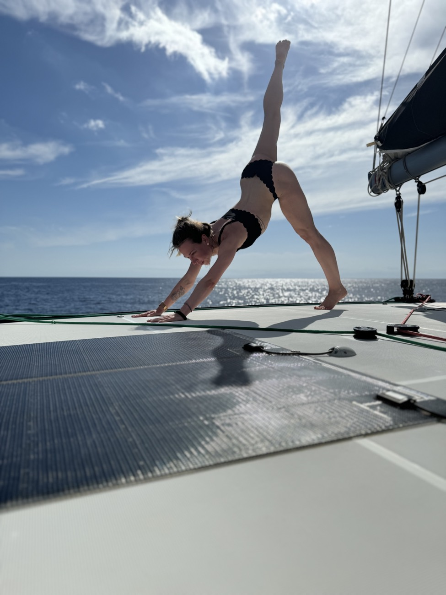
Світанок
Йога на світанку
Щоранку — м'яка практика в новому мальовничому місці: рух, дихання й тиша, поки море ще спить.
Wellness-канікули для дорослих дівчат · Women only
3–10 жовтня 2026 · Сицилія та Ліпарські острови.
7 днів на катамарані серед вулканічних островів, де ми поєднаємо море, жіночу компанію, yoga & mindfulness, Health & Wellness, авторське нутритивне середземноморське меню та достатньо вільного часу, щоб просто жити своє красиве італійське життя.
Ритм подорожі

Світанок
Щоранку — м'яка практика в новому мальовничому місці: рух, дихання й тиша, поки море ще спить.
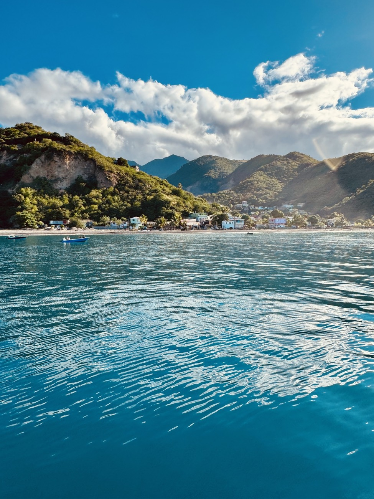
День
Бухти, нові острови, SUP, сонце й довгі обіди. Купання просто з катамарана й новий краєвид щодня.
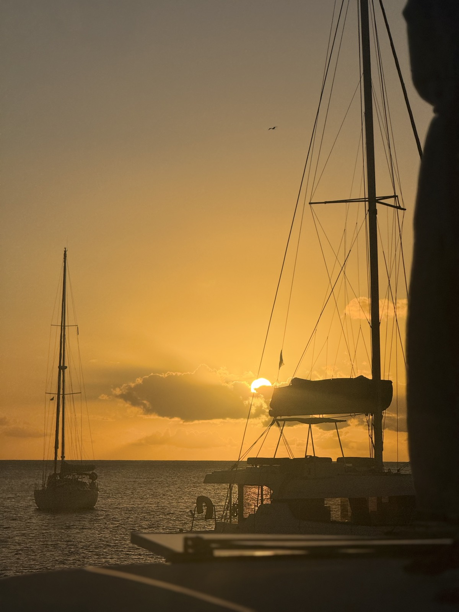
Вечір
Ресторани, yoga nidra, sound healing, чайна церемонія, жіночі кола — або просто захід сонця на палубі.
Програма є. Примусового wellness-марафону немає.
Ми спеціально залишили час і на практики, і на справжній відпочинок.
Early booking · перші 5 місць
Для перших п'яти підтверджених бронювань:
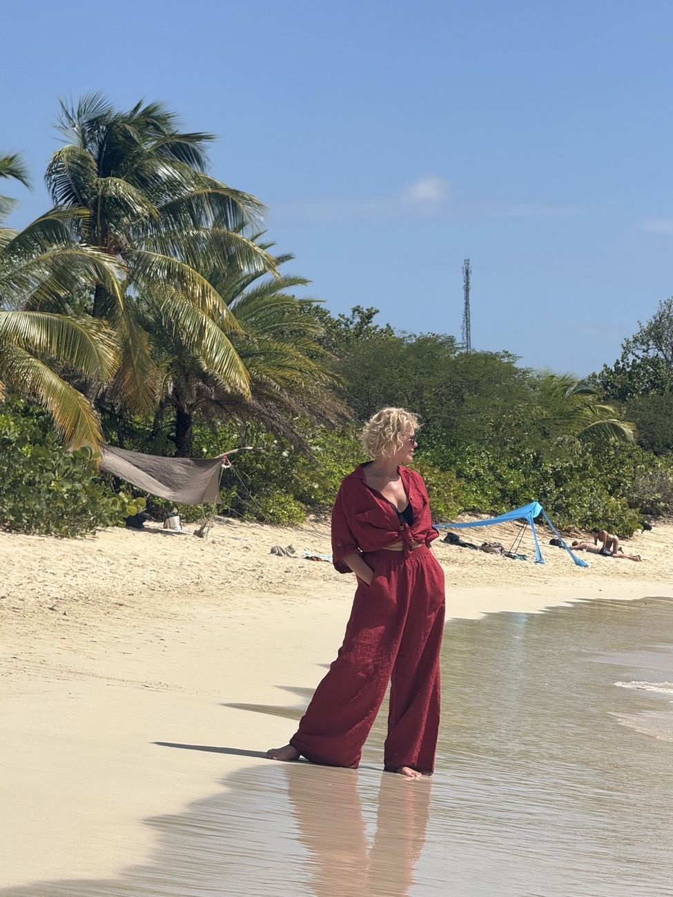
Додатковий WOW-бонус: серед усіх учасниць SERENITY H&W SICILY ми розіграємо персональну фотосесію на одному з Ліпарських островів.
Маршрут
Натисни на острівець на мапі, щоб дізнатися більше 👇
Маршрут може коригуватися капітаном залежно від погоди, моря та актуальних правил доступу до вулканічних зон.
Чому це не звичайний тур
Створена трьома сильними спеціалістами.
Щоб ти виспалась, засмагла, накупалась, смачно їла й отримала задоволення від кожного дня.
Збалансоване середземноморське харчування, повне італійського вайбу.
Море, відпочинок і сама жінка залишаються головними.
Маршрут, команда, кок, їжа, практики, програма й організація.
H&W програма
Women's circles: бажання · жіноча дружба · близькість · зміни · відпускання · інтеграція
Хто буде з вами
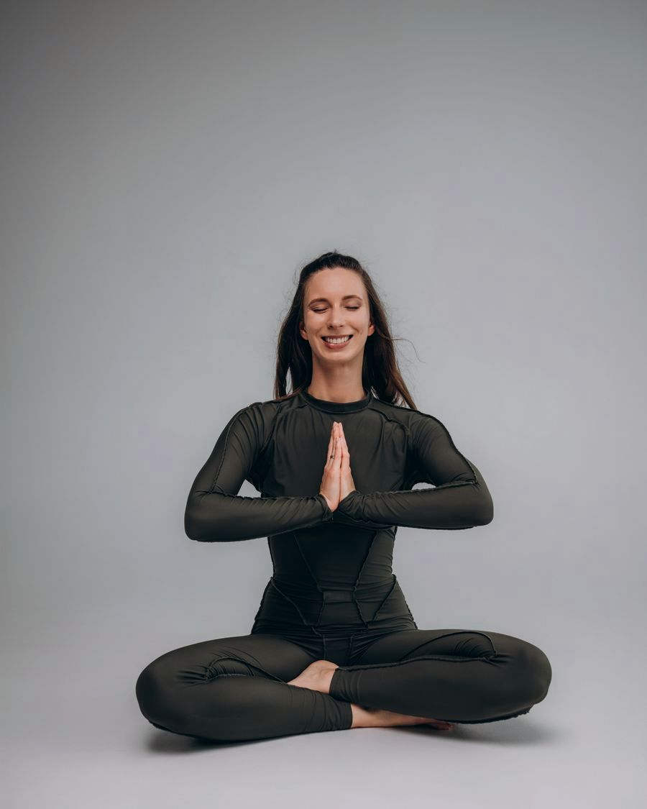
Yoga · meditation · sound · body
Веде всі тілесні та звукові практики туру.
@yogalieva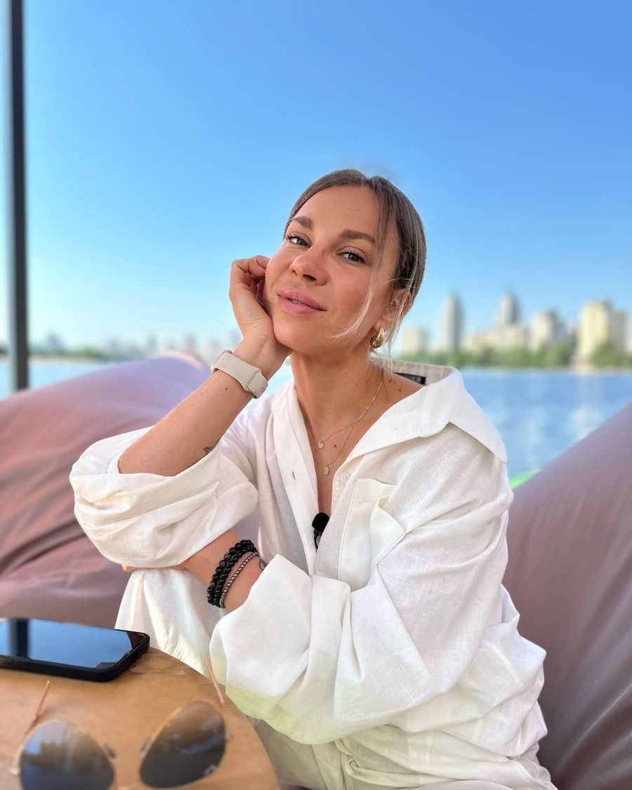
Nutrition · psychology · longevity
Створює нутритивне меню й веде H&W talks.
@diet.coach_alyona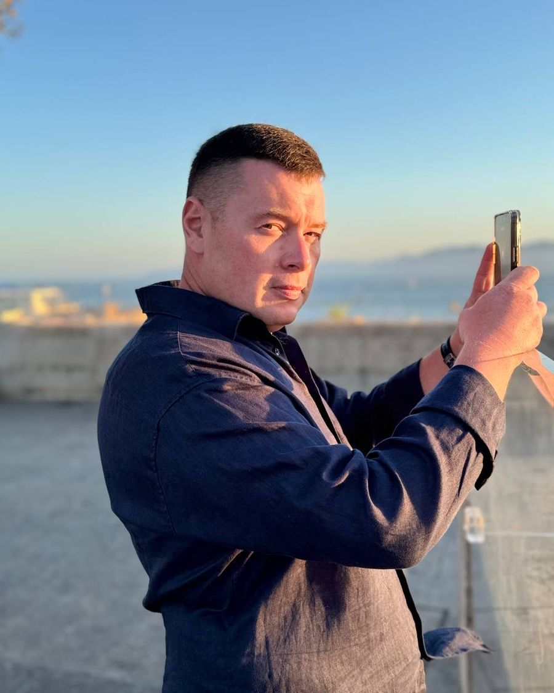
Sea · safety · route · yacht
Відповідає за море, маршрут і безпеку.
Food experience
На кожному катамарані — свій кок. Гості не готують і не чергують на кухні. Можна разом піти на локальний ринок, вибрати сицилійські томати, фрукти чи свіжу рибу — але далі готує команда. Healthy тут не означає голодно, прісно або «без пасти, бо ми на wellness».
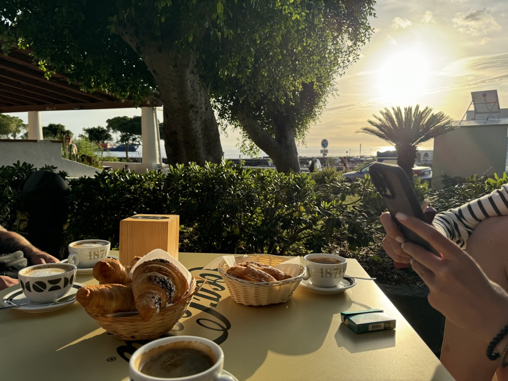
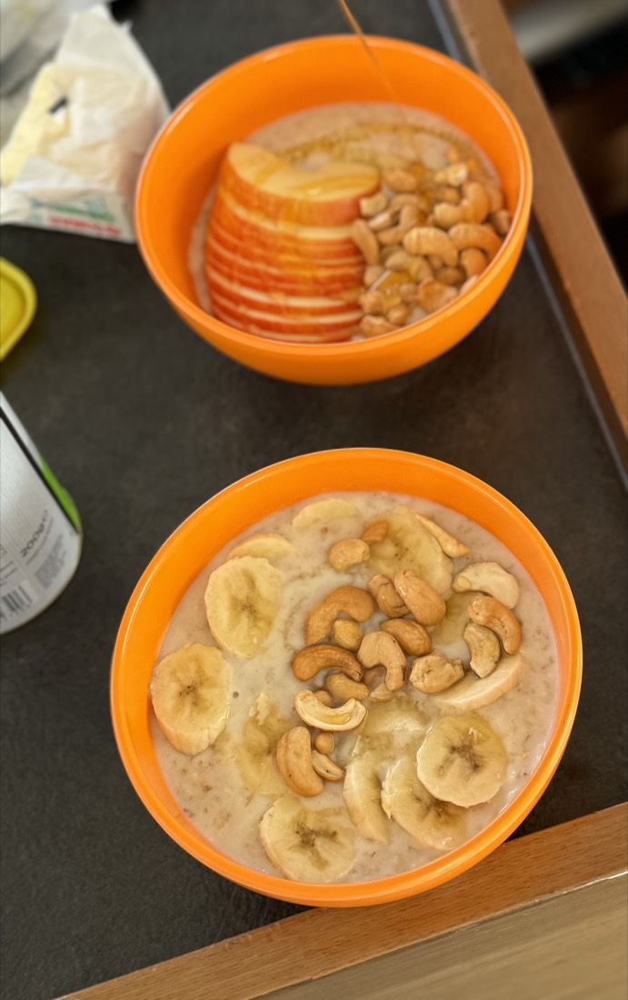
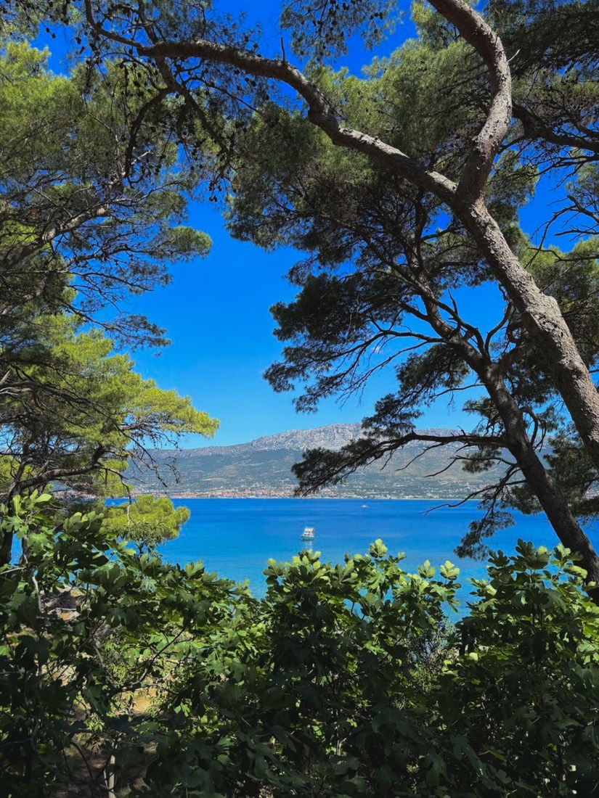
Тобі не потрібно збирати компанію, складати маршрут, планувати меню чи думати, хто сьогодні готує.
Ми створюємо жіночу групу, де легко знайомитися й знаходити своїх, але при цьому у кожної залишається достатньо особистого простору.
Програма по днях
Capo d'Orlando → Vulcano. Заселення на катамарани, знайомство з капітаном і командою, welcome-table на борту. Вихід у море, перше купання в Porto di Ponente з чорним вулканічним піском і захід сонця. Увечері — ресторан біля моря та ритуал відкриття: кожна обирає слово тижня й отримує символ-сувенір.
Vulcano → Lipari. М'яка світанкова практика, підйом на Gran Cratere (~2 год вулканічним ландшафтом із фумаролами). Практика DREAM про великі бажання. Купання в дикій Praia di Vinci з видом на Faraglioni, вечірня прогулянка старим Lipari, Citadel і Marina Corta. За бажанням — yoga nidra або sound practice.
Lipari → Panarea. Sunrise Yoga на панорамній точці Lipari. Снорклінг у Cala Junco. H&W talk «Біохакінг нормальної людини»: сон, енергія, recovery, циркадні ритми, стрес. Panarea — кактуси, білі будинки, кава й gelato. Aperitivo з видом на Stromboli, увечері — yoga nidra з Катею.
Panarea → Stromboli. Світанкова йога, купання біля Basiluzzo. Кульмінація: підйом на активний Stromboli з ліцензованим гідом і захід сонця, ритуал RELEASE. Для інших — спостереження Sciara del Fuoco з води. Вечеря на катамаранах, коротка медитація, море, зорі й Stromboli.
Stromboli → Salina. Відновлювальний ранок, купання в Pollara біля арки Il Perciato. Локальна пекарня Salina. H&W talk «Психологія харчування». Вільний час: скутери, каперси, Malvasia. Увечері — коротка медитація й спокійний вечір.
Salina → Lipari · Spiagge Bianche. Довга стоянка біля бірюзової води: купання, SUP, сон на сітці, фото, засмага. Для охочих — цвяхостояння. Увечері — китайська чайна церемонія та women's circle про жіночу дружбу після 30, близькість і підтримку.
Lipari/Vulcano → Capo d'Orlando. Останній світанок і йога, купання біля Faraglioni di Lipari. H&W talk «Молодість 30+». Повернення в Capo d'Orlando, фінальна вечеря всією групою та closing circle — повертаємось до слова, обраного першого дня. Фінал — sound healing.
Спокійний ранок, за бажанням — коротка йога. Спільний сніданок, збори, фото, обійми й остання кава. Кожна отримує farewell snack box у дорогу. Додому — з морською сіллю у волоссі й червоним браслетом на руці.
Ціна
Early booking — перші 5 місць: 2000 €
Усе враховано для тебе — без додаткових платежів.
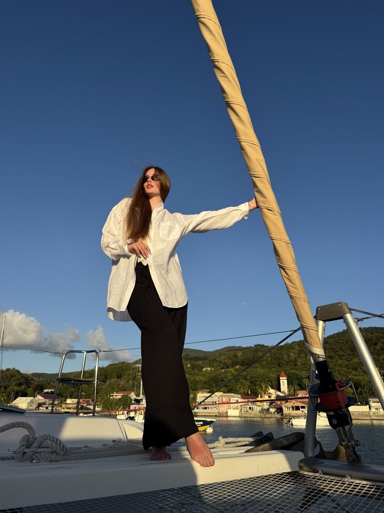
І ще один подарунок від Serenity
Серед усіх учасниць H&W Sicily ми розіграємо професійну зйомку у справжньому італійському антуражі.
Хочу бути там →FAQ
Так. Це одна з ключових особливостей формату — тобі не потрібно шукати компанію, щоб поїхати. Ми створюємо жіночу групу, де легко знайти своїх, зберігаючи особистий простір.
Ні. На кожному катамарані є професійний капітан, а перед виходом проводиться інструктаж.
Ні. Практики адаптовані для різного рівня підготовки.
Ні. Учасниця сама вирішує, у чому хоче брати участь.
Ні. На кожному катамарані працює кок.
Місце у двомісній каюті, катамаран, капітан, кок, паливо, марини та стоянки, продукти й харчування на борту, H&W-програма, yoga & sound practices, медичне страхування, організація та супровід.
Переліт, трансфери та особисті витрати на березі. Більше нічого — усе інше вже враховано в ціні.
На катамаранах, у двомісних каютах.
На катамарані заколисує значно менше, ніж на яхті, а переходи короткі й у захищених акваторіях. Перед туром команда надасть рекомендації щодо підготовки.
Активності залежать від погоди, стану моря, вулканічної активності та актуальних правил доступу. Безпека має пріоритет — для кожного сценарію є морська альтернатива.
3–10 October 2026 · Яхтова пригода · wellness · жіноче ком'юніті · нутритивне меню · кок на борту · Ліпарські острови · багато моря
Сім днів, де про тебе вже подумали.
Перші 5 місць — 2000 € + персональні H&W-бонуси
Забронювати місцеБронювання
Залиш заявку — і ми зв'яжемося, щоб розповісти про наступний крок бронювання. Або напиши нам одразу.